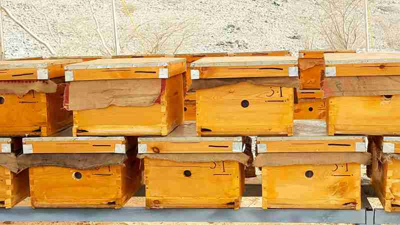
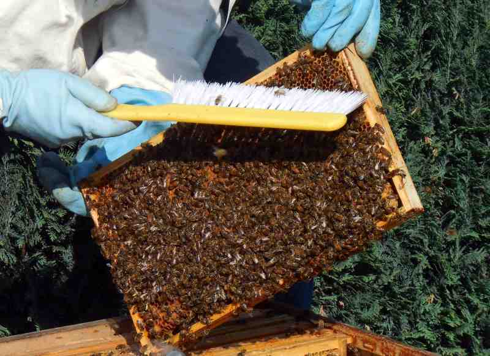

Rearing of honey bees or beekeeping is called Apiculture (madhumakhi palan in Hindi). Beekeeping is as old as history. Honeybees have found a place in literature, philosophy, art, folklore and even architecture. In fact, it is said that bees are one of the most widely studied insects in the world. While some admire their hard-working nature and division of labor, some find inspiration in their co-ordination and teamwork. In other words, beekeeping or bee farming is a widely practiced and attractive form of farming and way of life.
Agriculture and Beekeeping in IndiaMaintaining a beehive in an agricultural farm is not a new concept. Honey is a commercially important product since times unknown and a human going to forest to collect honey is well-known. Maintaining a beehive in a farm promises additional income to farmers. In addition, it does not require huge investments, infrastructure or even a fertile land to start bee farming in India. In agricultural, honey bees do not compete with the crops for resources. On the other hand, it helps increase agricultural productivity. This is because bees play an important role in pollinating many plants. Sunflowers and such other crops are highly dependent on bees for pollination. Honey produced by bees is of high commercial value. When honey is collected from the forests by traditional method, the bee colonies are destroyed. By raising them in artificial hives the colonies are preserved.
By-Products of Honey Bee Farming in IndiaApart from honey, there are other commercially important by-products like royal jelly, bees wax, pollen, propolis and bee venom.
Royal JellyIt is a secretion from the hypopharyngeal glands of nurse-bees. Queen larva and the young workers feed on royal jelly. It is milky in color and contains proteins, lipids, carbohydrates, minerals like iron, Sulphur, copper and silicon. It increases the vitality and vigor in humans.
BeeswaxBeeswax is secreted as a liquid but solidifies when exposed to air. Scales are formed after solidification which is removed by the hive-bees for building the comb. Although the wax is white in color, the shade varies depending on the pollen pigments. It is chiefly used in the candle industry. Other major places where the bees wax is important are for making creams, ointments, capsules, deodorants, varnish, shoe polish, etc.
HoneyIt is a viscous fluid produced from the flower nectar by the bees. Commercially it is the most important product of apiculture since it is a whole food containing sugars, antibiotics, enzymes, acids and minerals. Since it has a high sugar content, it is a high energy source. It is a useful carrier for many ayurvedic and unani medicinal preparations. In severe cases of malnutrition, ulcers and impaired digestion, honey is recommended for regular consumption.
PropolisPropolis is the resin-like exudate collected by honey bees from the trees. It is used by them for sealing the cracks and crevices. It has an adhesive quality and hence mixed with Vaseline. It also has burn healing property and used for preparing ointments that treats cuts, wounds, etc.
Different Species of Honey Bees and their Zoological DescriptionsBees belong to super-family Apoidea of the order Hymenoptera. Their body is covered with small, branched hairs. Their body secretes a wax which is used to make nests. They also make nests using resins, leaves, sand, and secretions from the sting gland and using silk produced by the adult bees. Superfamily Apoidea has about nine families of bees leading either social or solitary lives. Bees leading an advanced social life produce honey and they belong to three families viz. Apidae, Bombidae and Meliponidae. Honeybees are of two types:
Dwarf honey bee or Apis florea are the smallest of honeybees and often mistaken for stingless bees since they do not sting easily. They prefer hot and dry climate so they are found in plains and sub-tropical areas. Their comb shows a distinct honey portion at the top. They usually build their nests in small trees with dense leaves or in closely placed plant stalks like those of jowar or rice.
The Rock Bee (Apis Dorsata)These bees build their nests out in the open and are given a support underneath such as using a tree branch, rock cliff, etc. This is one reason why they are called rock bees. They build the largest hives with some measuring up to 200 cm X 150 cm in dimensions. They are semi-circular and hang from above. They even forage during moon-lit nights. Forest honey hunting is commonly carried out with rock bees.
Bee Colony Organization and Caste DistinctionBeing social insect honeybees have divided their society into different castes viz. drone bees, queen bees and worker bees.
Drone BeesThey are the male bees developed from the unfertilized eggs. Larvae developing from unfertilized eggs are fed on the royal jelly by the worker bees thus giving rise to drones. Their main purpose is to mate the queen bees and fertilize the eggs. The male bees are taken care of by the worker bees till the queen in the colony is mate. After mating the drone dies. Similarly, once the mated queen returns to hive, the drones are neglected by the worker bees.
Queen BeesQueens are the fertile female of the beehive. Every hive has one queen who stays in the colony for about 10 days till the period of maturity. Once mature they go out on mating flights. Post mating, they return to the hive to play the role of queen mother by laying the eggs. They normally lay up to 15,000 eggs per day. However, it is the availability of food royal jelly that controls the egg laying. Queens can live up to 3 years but their effective fertilized egg laying period lasts upto 2 years. The worker brood cells in the hive receive the fertilized eggs while drone cells receive unfertilized ones that develop into worker and drone larvae respectively.
Prior Knowledge to Start Honey Bee Farming in IndiaApiculture has its own set of challenges. Some of the problems and possible solutions of beekeeping in India are described below.
Beekeeping KnowledgeThis is one of the most important steps. The farmer must gain adequate knowledge on the beekeeping process, zoology of the bees, bee-human relation, sting management, etc. It is advisable to acquire training from the local beekeeping authority. Government organizations like National Bee Board under the Agriculture Department and Central Bee Research Training Institute provides training to farmers in apiculture. In addition, it is advisable to work with local farmers before starting beekeeping since it provides hands-on experience and latest apiculture information.
Planning for Beekeeping in IndiaOnce adequate experience is gained the next step is to plan the apiculture process. For this it is necessary to decide on the site, type of bee, equipment to be used and last but not the least- place of marketing.
Infrastructural Requirements for Apiculture in IndiaFlowers are the chief raw materials needed for honey production. Plants contain nectar and pollen both of which are essential for the survival and growth of honeybees. Consuming these raw materials bees manufacture honey, beeswax, royal jelly, etc. India being a predominantly agricultural country and forested land, natural vegetation is in abundance. This is especially true about parts of Western Ghats, North Eastern regions like Assam and Sundarban forests. Therefore, these areas are said to be more suited for the bee life. A mellifera which was introduced to India depends cultivation of crops like arecanut, coconut, mango, palm, cashew, cinnamon, cumins, fodder legumes, cloves, ginger, turmeric and such spice crops for survival. Plantations of tamarind, eucalyptus, gulmohar, etc. also boost honey production. Pulses, trees of citrus fruits, fence plants like mulberry, jatropha, rubber, etc. are also important for bee production. Statistics show that in parts of India where rubber plantation is in abundance they are the single and largest source of nectar for honey production. Similarly, litchis prove to be an excellent source during its flowering period, i.e, during the months of March to May. Cereal crops like maize, jowar and bajra are viewed with adequate importance for the pollen.
Place for Honey Bee FarmThe place of beekeeping must be dry. Humidity, moisture and dampness affect the quality of honey and the bees’ flight. The place chosen must be protected from harsh sunlight. It is preferred to keep the bees in shaded areas as they are protected by direct sunlight and the breeze keeps them cool. The place of rearing must also have a clean drinking water source. The most important requirement is that there must be plenty of forage or plants that yield nectar and pollen for the bees near the hives.
Honey bee farming in India has been practiced in since ancient times. Therefore there are different ways of rearing honey bees.
Clay PotsBees are reared in clay pots in parts of south India. Air holes are punched in the pots, smeared with beeswax and kept in gardens. They act as instruments to attract the swarms. Once the colony is set, another pot is inverted over this. Once the rains set in the pots are overturned and honey is harvested.
Tree TrunksTrunks of trees or hollow wooden logs are used as hives. However this is in altitudes above 1800m sea level.
Modern HivesA modern beehive is a rectangular wooden box that can be easily moved. They have seven major components:
StandIt is a support structure that forms the base of the hive. It generally has four legs.
Floor BoardIt is a drawer like tray which is raised on all four sides by runners. However, in front it is an alighting board so that the tray can be pulled out if need be.
Capturing HoneybeesNo beehive can function without honeybees. The combs and bees are removed from their natural nests and placed in the wooden hive. This practice is normally done in the early morning or late evening. The weather is typically clear and the sun is mild during this period. Another way is to place decoy hives at different spots. The spots must be places wherein the bees are likely to swarm. Once a swarm settles, the decoy hive is taken and the colony is transferred to the movable hive frame. Since the workers do not stay in a hive without queen, a queen’s presence is necessary. Generally, when a colony is procured it must contain a young queen bee and a swarm of worker bees.
Queen RearingAlthough queen bees can lay eggs for 3 years, on an average they can lay fertilized eggs for a year or maximum two years. After this period they start laying unfertilized eggs. This affects the colony. Generally farmers revive the colonies by placing another queen bee. This process is called requeening. In apiculture, farmers are advised to requeen their hives after every one and half year.
Prevention of SwarmingThe strength of a bee colony lies in its worker bees. Swarming is a natural reproduction process that is generally uneconomical. This is because large parts of the work force leave the colony thus making it weak. During the swarming season, queen is removed and kept in cage and the queen cells are destroyed. It takes about 10 days for the swarming period to recede and pass away. After this the queen is released into the environment.
Honey HarvestingGenerally honey is harvested at the end of flowering season. Traditionally the hives are puffed with smoke so that the bees fly away. Then the combs are removed and squeezed in cloth to extract honey. In case of clay pots, the pots are broken and the comb is squeezed.
In wooden bee hives, honey is accumulated in the honey chamber. When one honey chamber is full and the honey is ripening, another chamber is inserted just below the filled chamber and just above the brood chamber. This process is repeated as and when each chamber gets full and the honey is left to ripe naturally. Once the combs start getting sealed, it is an indication that the honey is ripe and that it is time to extract them. The hives are then smoked and bees are dropped back into the hive by jerking the frame. The honey chambers or frames are then gathered and brought indoors for extraction. The sealing is cut open and kept into the honey extractor machine. The extractor is rotated at 300 rpm and the honey flows out owing to the centrifugal force. The frames are then placed back in the movable hive.
ConclusionBeekeeping in India is thus an important agri-business that not only promises good returns to the farmers but also helps increase agricultural productivity. Honey bee farming in India is also a good source of income for the farmers especially during the period when the growth of crop is still under process. However, a good amount of training and trials are required for a successful honey bee farm.
References: